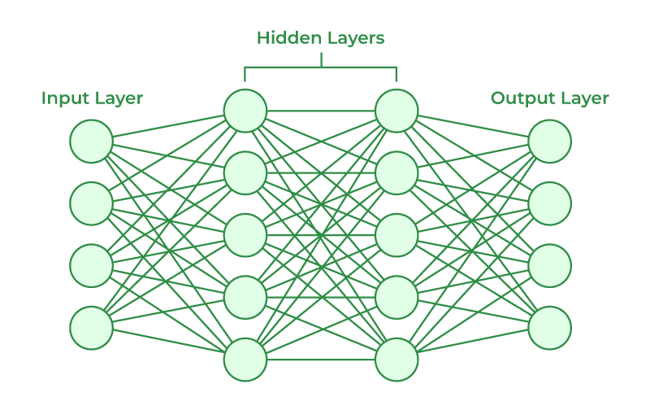
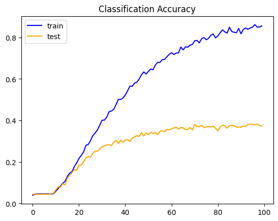
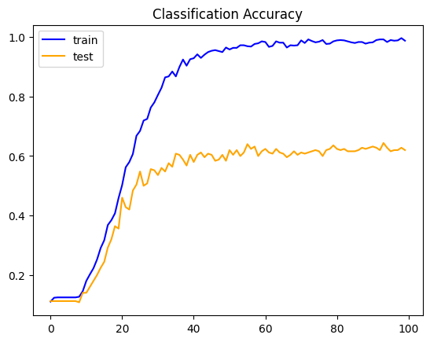
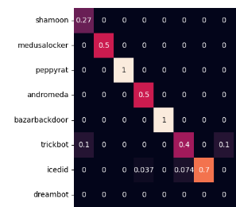

Multi-Label Malware Classifier
1. Introduction
In recent years, the discourse surrounding cyber attacks has surged to the forefront of both cybersecurity research and everyday conversations. As technology pervades nearly every aspect of everyday life, it serves as a potential vector for compromise, often without users even being aware. The landscape of cyber threats has evolved, which has led to the given rise of cyber criminals. As students who have interest in the cybersecurity and machine learning realm, we wanted to develop an application that enabled participants to understand the type of malicious software they were facing and what are some of the similarities they may see without any form of knowledge of the malware other than the file itself. In this paper, we will discuss our approach and methodology about how we went about identifying these malicious files and classifying them appropriately.
Malware is any type of intrusive software utilized by cybercriminals to steal data, damage or destroy computers and computer systems. Some examples of malware are viruses, worms, trojan horses, ransomware, etc. Malware can also be grouped into families which are applications with similar attack techniques.
A hash is an identifier of a file or message that is a one-time generated digest that can be utilized to validate the integrity of the file or message. Hashes for malware are used to see if the file changes in any shape or form before and after executing. Some examples of hashes are SHA and MD5. These hashes are essentially made to be random and one-way, and should have no connection to the data. However, there are cases where hashes can be used to group certain files and its data content. These are called fuzzing hashing (also known as similarity hashing).
A similarity hash is a technique for detecting data that is similar, but not exactly the same, as other data. In this study, we utilized Trend Micro Locality Sensitive Hash (TLSH)1. TLSH generates a 72 character hash dependent on how similar different files’s data and metadata are. The closer the files are in comparison, the more similar the TLSH’s characters will be. The TLSH is the stepping stone for our machine learning model.
A Convolutional Neural Network (CNN) is a type of neural network specifically designed to process structured grid data, such as images, and typically consists of multiple convolutional, pooling, and fully connected layers.2

The convolutional layer is the main processing unit of a CNN, where the majority of computation occurs. Since we are dealing with hashes represented as an array of characters, our “grid” of data is going to be just a 1 dimensional list. We also need to establish a kernel size, a feature detector, that iterates through the list and finds patterns within each hash. The kernel is an array of weights, smaller than the size of the hash, that iterates through every possible consecutive character within the hash. It then assigns a weight to each character within the kernel filter. This helps the neural network determine patterns within the hashes.
The pooling layer is similar to the convolutional layer in the sense that it sweeps a filter across the entire input array in hopes of reducing the dimensionality and in turn, the number of parameters. The difference between these two layers is that the pooling layer’s filter does not have any weights associated with it, instead it applies an aggregation function. We use max pooling for our classifier which selects the characters with the maximum value to send to the output array.
Finally, the fully connected layer takes all the outputs from the previous layer and connects them through weights to the desired number of output nodes. Then the hash, based on which node has the highest output value, is mapped to one of the possible classifications.
2. Problem Definition
Our assignment was to create a research paper oriented around malware. Something that caught our eye from the beginning of the semester was learning about similarity hashes. Along with similarity hashes, we learned that there is often an unknown when it comes to classifying malware. There are quite a number of false positives when it comes to classifying malware. Families are used as indicators as to what attack patterns it may follow, but that can only be done through some form of analysis whether that be static or dynamic. So, we wanted to try and solve this problem by using machine learning to classify malware based on their TLSH. This would be done by feeding the TLSH to a CNN for it to predict the family it’s associated with. This way, there would not be a need for any form of analysis as a grouping of malware can be done just by feeding the TLSH, which can be done as simple as reading the bytes of the file.
3. Proposed Method
We decided to use the Tensorflow3 python library to train our CNN since we have previous experience using this library and knowledge of python. Tensorflow is easy to use and allows for users to simply build various neural networks along with understanding the workings behind them. We also decided to run our CNN on our personal machine: Ryzen 7 7800x3D, 32GB DDR5 6000mhz, and AMD Radeon RX7600.
For our dataset we used Booz Allen’s Malware Open-source Threat Intelligence Family (MOTIF) dataset4. This dataset has classified just over 3000 pieces of malware with their MD5 hash, SHA256 hash, reported_family, byte entropy, etc. In addition to this information, the defanged malware file is also zipped in the dataset. For our research we are only interested in the reported family, along with getting the TLSH of the original file. Since each file is labeled by their MD5 hash, we can match the MD5 hash within the dataset with the file and take the TLSH and reported family. The approach used to gather the TLSH was as follows: open the file in a “read byte” only mode and use the tlsh.hash function to read in the bytes. This produced a hash that we used to classify the family groupings together. We had two files of data: one with 502 families and one with 33 families. The data file that contained a total of 502 families encapsulated the entirety of the MOTIF dataset files. While the data with only 33 families, were just the families that had 20 or more files classified to them.
In order to pass the TLSH as a readable object for the CNN, we need to convert the characters to vectors. This is easily done by first converting them to ASCII integers. Then passing them through an embedded layer, which then converts the ASCII integers to vectors. Now that our data is properly formatted, we can continue to train the CNN with two 1D convolutional layers, each followed by a 1D max pooling layer, and finally 2 dense layers. We ran this CNN on the two datasets. The entirety of the dataset produced an accuracy of 35%, and the reduced dataset obtained an accuracy of 50%. But this was nowhere near the accuracy that we were hoping to achieve.
4. Intuition
To improve our model from here, we needed to try and prevent it from overfitting. This way we see more improvement from learning rather than memorization in training. To accomplish this we added dropout layers. When information is being passed from one layer of neurons to another, it decides what neuron is best suited for that information based on the weight associated. To prevent the neural network from choosing the same neuron, dropout is applied. Dropout sets the weights of a certain percent of neurons to 0, that way the neural network is forced to choose other options and find more detailed patterns within the hash.
Next we needed to play with the number of layers the neural network had. This can be finicky because if we add too many layers, the neural network might become too complex and unable to learn. But if it’s too simple, we won't be able to maximize our accuracy. So, we needed to create and train neural networks and compare their average accuracy to find what worked best and what did not work.
Similar to the number of layers, we needed to find the best number of neurons per layer. This is to allow the neural network to find more abstract patterns, but will end up taking longer than needed to train if too many nodes are added. So we needed to find the point at which the model’s accuracy stayed relatively consistent if we were to increase the number of neurons, and then cut the neurons down to the point where the accuracy doesn’t drop off.
5. Experiments
To improve on our initial CNN we decided to add dropout layers to help with over fitting as well as to encourage the model to learn more. Along with the addition of dropout layers, we added another convolutional layer too. This improved our model a bit, but not enough for the results we’re hoping for.
We then increased the number of nodes each convolutional layer held. Initially we had 64 and 128 nodes respectively, which achieved our 50% accuracy almost instantaneously. So we decided to double the number of nodes within each layer for 128, 256, 512 nodes respectively. Although this slowed our model down in training, it did help increase the accuracy further.
We next played with the number of dense layers in our model. The dense layer is part of the fully connected layer and reduces the dimensionality of our CNN to fit the number of classifiers we’re using. Since our final convolutional layer contains 512 nodes, we want to gradually reduce the number of nodes down to our number of classifiers. This helps improve the generalization of our model and to control our complexity. In this case we have 33 classifiers, so we adjusted the dense layer to reduce the nodes to 256.
Lastly we touched on the activation functions for each layer and found that ReLu was the best for preventing vanishing gradients. Except for our classifying dense layer, we used softmax to get the best result for classifying. And used he_uniform for our kernel initializers to help generalize even further.
Our final model had three convolutional layers with 128, 256, and 512 nodes respectively. Each convolutional layer had the following layers follow them: 1D max pooling, and dropout of 0.3. Each 1D max pooling kernel size was different since the size of our information being passed was reduced each time. So our 1D max pooling layers, in order, had a kernel size of 4, then 3, then finally global max pooling to feed into the fully connected layer. Our fully connected layer is where we flatten the results, connect them to a dense layer of size 256 with 0.01 L2 regularization, another dropout layer of 0.2, and finally our final output dense layer of 33, representing the number of families to classify our data to. The activation function of all the layers is ReLu5, except for our last dense layer which uses softmax.

With our model set, our training and testing data ready, through 100 epochs, and a batch size decreased by a factor of 32 the accuracy for the 502 family dataset was 42% and the average accuracy for the 33 families was 65%.

6. Observations and Details
After analyzing the accuracy of each family after testing, we found that there are multiple families that are regularly misclassified by our neural network. Mainly dreambot and ursnif are classified to the wrong family, yet they’re not regularly classified to the same families.6

Even adding a lot of different techniques and approaches, we were only able to see a 8%-15% increase in the overall accuracy.We believe this is due to the fact that each family had a very limited number of files associated with them, thus making it difficult for our model to train and recognize patterns between each file. Out of the total of 502 families, 152 of them were one file families which could easily be misclassified. With a larger dataset with more overall groupings of families, we believe we can achieve a much higher accuracy with this CNN.
7. Conclusions
In this paper we discussed our proposed method for using similarity hashes to group malware families together using a CNN. By using the TLSH, we were able to get similarity hashes of the malware files from Booz Allen’s MOTIF dataset and group them together. We first ran the CNN on every malware family and had a 35% accuracy. We then ran the CNN on malware families with file grouping greater than 20 and had a 50% accuracy. To increase the accuracy, we added dropout layers, conventional laters, edited the dense layers, and lastly, changed to the ReLu activation function. For the 502 family dataset, we had an increased accuracy of 42% and with reduced 33 families, an increased accuracy of 65%. However, we believe these low accuracies are due to the dataset limitations and not from the CNN itself. More research is needed to ensure that the CNN is producing accurate results through a larger dataset.
8. References
- Trendmicro. “Trendmicro/Tlsh.” GitHub, 18 Mar. 2019, github.com/trendmicro/tlsh.
- “Artificial Neural Networks and Its Applications.” GeeksforGeeks, GeeksforGeeks, 2 June 2023, www.geeksforgeeks.org/artificial-neural-networks-and-its-applications/.
- “Basic Text Classification : Tensorflow Core.” TensorFlow, www.tensorflow.org/tutorials/keras/text_classification.
- Joyce, RJ. “Boozallen/Motif.” GitHub, 26 Nov. 2021, github.com/boozallen/MOTIF.
- “An Introduction to the ReLU Activation Function.” Built In. Accessed December 17, 2023. https://builtin.com/machine-learning/relu-activation-function